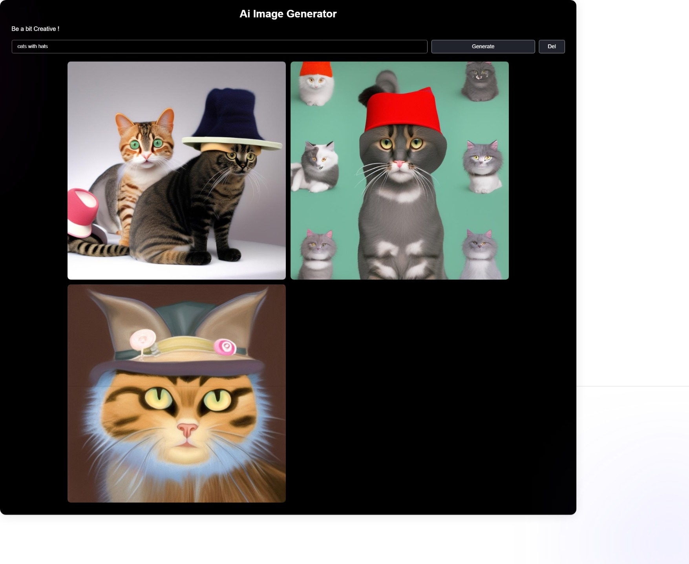

AI Image Generator
This is an interesting tool that will generate AI generated images whichever you want. I have used the Huggin Face's Pre-Trained model to generate those images.
Screenshots :

Build:
It is built with care because, the API Key is mandatory for this and the requesting limits are strict so we designed it carefully to make a specific number of requests per 20 seconds.
Thanks to the Model : stable-diffusion-2-1 which i have used to generate images.
Advantages :
No need for any paid or Browser things to search for an image to use for your personal or educational purposes. Just go for it and ask whatever you want.
Also, I have given a button for this component from the AI Assistant.
Disadvantages :
As it is a No-Budget project, we used Hugging Face Models which's servers are too busy any time. As we are using a free tier version, it will be a significant late in image response and it may FAIL often by server has so many load at that time.
If it is built with OpenAI's Llama Model, which is a Paid one, it will be 95% accurate and has no any fails.